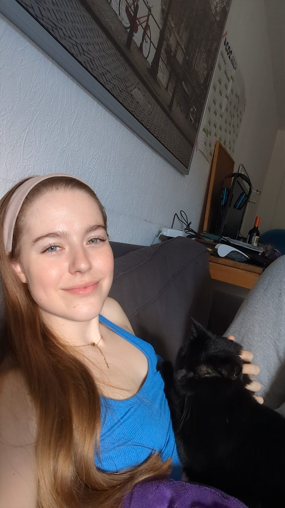

I read signals in data, systems and people. Occasionally I write them down as poems.
data scienceengineeringproduct
▶ scroll to start · click anything with a
LEVEL 01 · 07:30 · ABOUT
In short

Computer scientist (M.Sc.) who turns messy human data into decisions. I ran a preregistered study of 982 people, co-authored a USENIX paper and taught systems courses for four years. On the business side I spent a year as an Account Manager at Amazon, growing seller revenue with data, and now work as a Cloud Support Engineer at AWS. In between I helped build two start-ups: Riposte, an ML coaching tool for fencers, and Fechtklingen.de, an online blade shop.
982participants, preregistered thesis study
1peer-reviewed paper, SOUPS / USENIX
4 yrsteaching systems & architecture
15 mocustomer-facing at Amazon & AWS, and counting
basedBerlin
fromCanada → Bonn
degreeM.Sc. CS, GPA 1.3 (German scale, 1 = best)
languagesen · de · fr · it
nowCloud Support Engineer, AWS
catsDdos, Caruso
LEVEL 02 · 09:00 · DATA
Research I've done
M.Sc. thesis · 2025survey · n = 982 · preregistered
Physical vs Digital Surveillance
How do people judge surveillance: effective, invasive, acceptable? I designed the survey, preregistered 28 hypotheses, cleaned and analysed 982 responses (Wilcoxon, Kruskal–Wallis, Spearman, Dunn), and wrote it up. Click through the findings:
Overt methods are more acceptable than covert ones (3.78 vs 2.81 on a 5-point scale, p < .001). Physical slightly beats digital.
Effectiveness predicts acceptance more than invasiveness does (ρ up to 0.47 vs 0.15). People accept what they think works.
Trust in institutions is the strongest driver and lower than in prior studies; political affiliation is a clear divider.
We set up 2FA on 78 popular services and audited what happens when you lose the second factor. 28 never warn you it could happen; most have no "forgot my 2FA" link. I ran data collection and analysis.
Mostly solo, mostly plain HTML/CSS/JS, always end to end.
productfront-endAWSn8n
Lumi — pitch-call training simulator
Built at Amazon to practise seller pitch calls against a simulated counterpart. I designed the user flow, conversation structure and scoring framework, built the front-end, automated the workflows in n8n, and integrated AWS services for speech, knowledge-base retrieval and near real-time dialogue.
Front-end: HTML/CSS/JS, UI prototype through to working tool
Back-end: n8n workflows orchestrating AWS speech + knowledge base
Scoring: rubric-based feedback after every simulated call
internal toolteachingplain JS
AWS Cert Hub — study site for my team
Built for colleagues preparing for AWS certifications. Cheat sheets, quizzes, a flashcard study app and the slide decks from sessions I ran in person. Covers Cloud Practitioner, AI Practitioner, Solutions Architect Associate and Professional, and AI Business Strategist.
Flashcard and quiz app with spaced repetition, no backend, works offline
Cheat sheets per exam domain, written from my own prep notes
Presentations delivered live to the team, then published on the site
Product and research lead, 2023–2025. Turning raw pose-estimation data into feedback a coach can actually use. Interviewed fencers and coaches to find what they ask for versus what looks good in a demo, then mapped the pipeline: raw pose → movement metrics → tactical insight.
Route map, hotel options with picks, food, a drag-and-drop day-by-day plan with Google Maps links, and a shared packing list. Installable PWA with a service worker, no build step, shared logic across trips.
One hand-drawn SVG room. Scroll progress drives a keyframed day: ~25 colour variables, sun and moon paths, two cats with three poses each, rain, city lights, a lamp. Interpolation is smoothstep between keyframes, smoothed again per frame. Everything is plain HTML, CSS and JS served from GitHub Pages.
There are at least five easter eggs. The console has a hint.
Tools I made for myself
Meal planner: weekly plan + shopping list, local-first.
Event site for the German team fencing championships in Koblenz.
Instagram unfollowers: a Python script, because the app wouldn't tell me.
Technical support for customers of the EU Sovereign Cloud: diagnosing and resolving issues across a wide range of AWS services, from networking and compute to IAM and storage
Customer-facing by default: translating root causes into clear next steps for engineers and non-engineers alike
Voice of the Engineer (our team's name for the role): designed and ran team-satisfaction surveys, analysed the results, identified improvement points and brought concerns to leadership
Built the AWS Cert Hub and ran in-person prep sessions so teammates could study for certifications together
Organised team meetings, team-bonding activities and site-wide Amazon meetings
Designed quantitative and qualitative studies on user-centric security: survey instruments, experiments, interviews, preregistrations
Led data collection (Prolific, Qualtrics) and cleaning; ran the statistics: t-tests, chi-square, Wilcoxon, Kruskal–Wallis, Spearman, post-hoc corrections, effect sizes
Co-authored the SOUPS 2023 (USENIX) paper on 2FA account recovery across 78 services
Thesis: preregistered n = 982 survey on surveillance perception, 28 hypotheses, written up in a 200-cell analysis notebook
Grades are on the German scale: 1.0 is best, 4.0 is a pass.
2023 — 2025
M.Sc. Computer Science · University of Bonn · GPA 1.3
Focus: cybersecurity. Thesis in the Behavioural Security Group. Coursework across theoretical CS, robotics and intelligent systems, hardware and software design, visual and audio data analysis.
2018 — 2023
B.Sc. Computer Science, minor in Physics · University of Bonn · GPA 2.0
Physics minor with an astrophysics lean. Elected student body member. Peer tutor.
2010 — 2018
Abitur · Sankt Adelheid Gymnasium, Bonn · GPA 1.1
Certifications
AWSAI PractitionerAWS Certified AI Practitioner
AWSAI Business StrategistAWS Certified AI Business Strategist
nextSolutions ArchitectAssociate, in preparation
Recognition
2023FS-ISAC ScholarshipWomen in Cybersecurity
2017Hans-Riegel-Fachpreis2nd place, Physics · University of Bonn
LEVEL 07 · 20:00 · FAVOURITE STATISTICS
Correlation is not causation, but it is funny
A short tour of the ways numbers lie to well-meaning people. All of these have happened to someone with a budget.
The margarine problem
US per-capita margarine consumption tracks the divorce rate in Maine at r ≈ 0.99 over a decade. Nobody has proposed a mechanism. Ice-cream sales predict shark attacks beautifully. Both predict summer.
It is almost always time, weather, money, or population. If two things both go up for ten years, they correlate. So does everything else that went up for ten years.
Armour the holes that aren't there
WWII engineers wanted to armour the parts of returning bombers with the most bullet holes. Abraham Wald pointed out those were the planes that came back. The planes hit in the clean spots didn't. Survivorship bias, one sentence, actual lives.
Every "habits of successful founders" article is a bomber with holes in the wings.
Simpson's paradox, with kidney stones
Two treatments. Overall, B looks better. Split by stone size, A wins in both groups. Doctors gave the harder cases to A.
The 99% accurate test
A test is 99% accurate. You test positive. How likely are you actually sick? It depends almost entirely on how rare the thing is.
9%chance you're actually sick
Monty Hall, playable
Three doors, one car. Pick a door; I open a goat door; you decide whether to switch. Play ten rounds, then look at the tally.
pick a door
stay 0/0 · switch 0/0
One from my own data
982 Americans rated digital surveillance 7.3/10 for how common it is. Most also said it wouldn't affect them personally. The ones who thought it would accepted it a full point less (2.9 vs 3.8 out of 5).
Also: my notebook once printed a p-value with 85 zeros. I have since learned about scientific notation.
LEVEL 08 · 21:30 · ELSEWHERE
After hours
Everything on the desk opens. Everything on the shelf has a story. The rest is here.